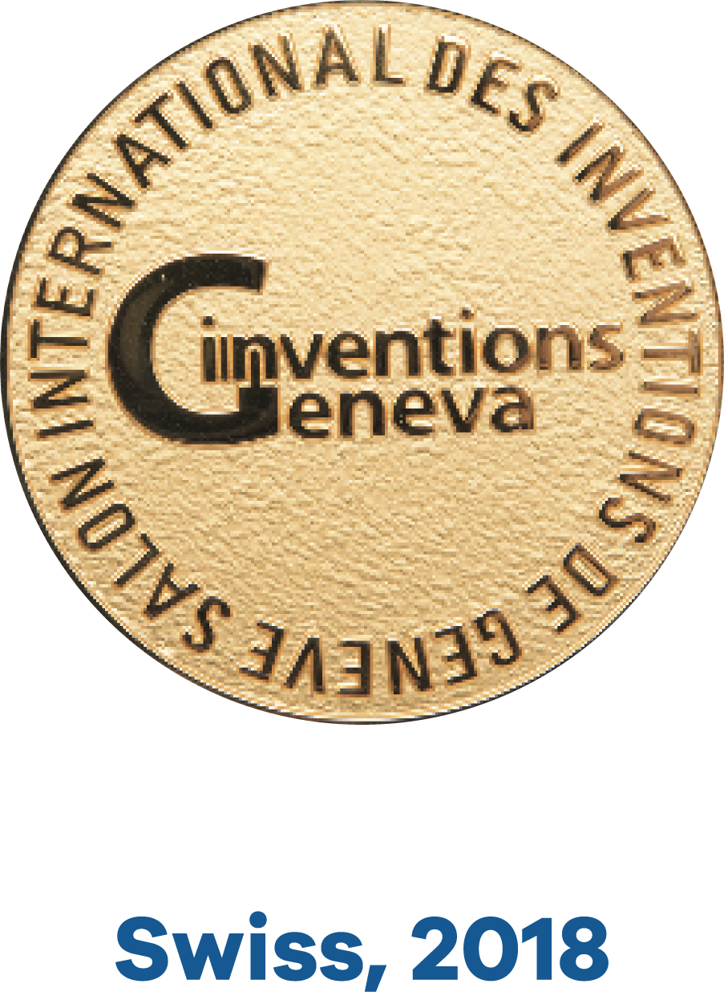
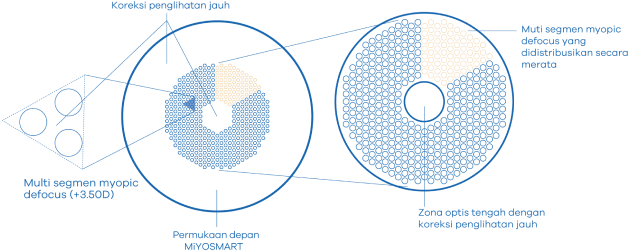
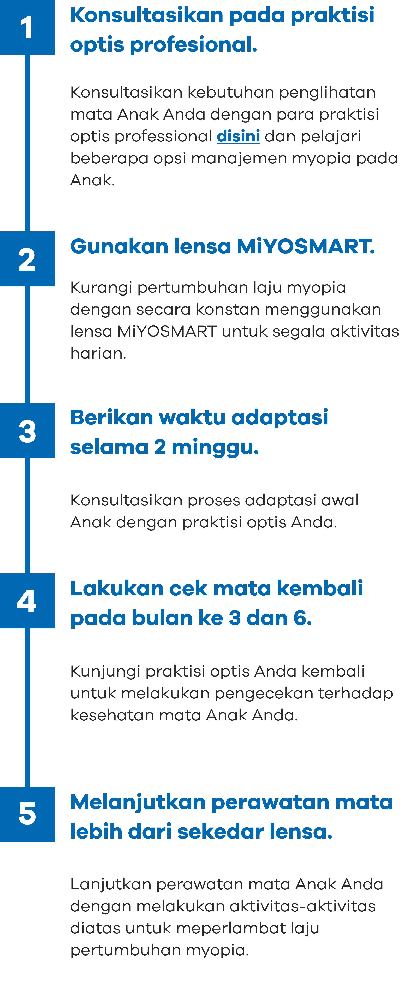

"Bersama, kita kontrol myopia pada anak"
Saat ini, pada banyak kasus, myopia dikoreksi dengan lensa single Vision (1 fokus) untuk membantu melihat. Hanya saja, lensa single vision tidak dibuat untuk menahan laju pertumbuhan myopia
Salah satu inovasi terkini hadir dalam lensa MiYOSMART. Lensa yang diperuntukkan untuk manajemen myopia. Bekerjasama dengan para pebniliti Universitas Politeknik Hong Kong (PolyU), kami menghadirkan spesifikasi lensa koreksi myopia dan memperlambat laju pertumbuhanya secara bersamaan.

Efektif

Mudah

Aman
Lensa kacamata
MIYOSMART dirancang
khusus agar Anak dapat bebas
beraktivitas dengan penglohatan yang maksimal.
Peraih penghargaan dan terbukti secara klinis
sebagai solusi efektif
kontrol myopia
-
MiYOSMART lolos uji kontrol selama 6 tahun terhadap Anak usia 8 hingga 13 tahun dan terbukti efektif serta 3 konsisten dalam menahan laju pertumbuhan myopia.


Teknologi
D.I.M.S
-
Teknologi D.I.M.S merupakan hasil kolaborasi bersama Universitas Politeknik Hong Kong (PolyU). Teknologi berupa pola segmentasi defokus yang berfungsi sebagai penahan laju pertumbuhan myopia.
Teknologi D.I.M.S terbukti efektif dapat :
- Mengkoreksi rabun jauh dan dengan bersamaan mengurangi laju pertumbuhan myopia
sebesar 59%
- Menahan pemandangan bola mata (pertumbuhan myopia) hingga 60%
- Menghentikan pertumbuhan myopia hingga 21.5%

Eye Shield
-
Dukung Anak melakukan aktivitasnya secara bebas. Eye Shield memberikan perlindungan terhadap matas si kecil. Bahan lensa tahan pecah, dan memiliki proteksi terhadap sinar UV.
Berikan Anak Anda Pengliohatan yang lebih baik lagi. 
Hoya memberikan jaminan penggantian lensa MiYOSMART gratis apabila terdapat pertumbuhan myopia sebesar -0.50 D dalam durasi 6 bulan*